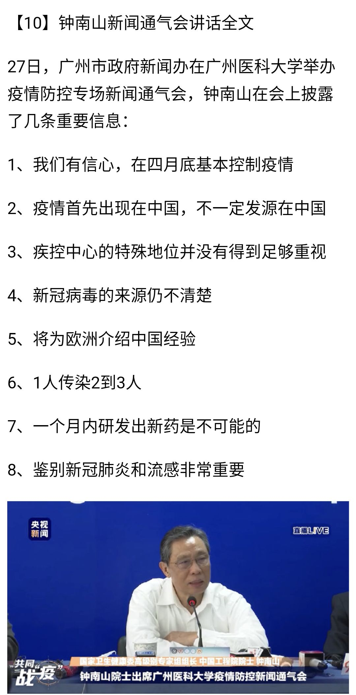
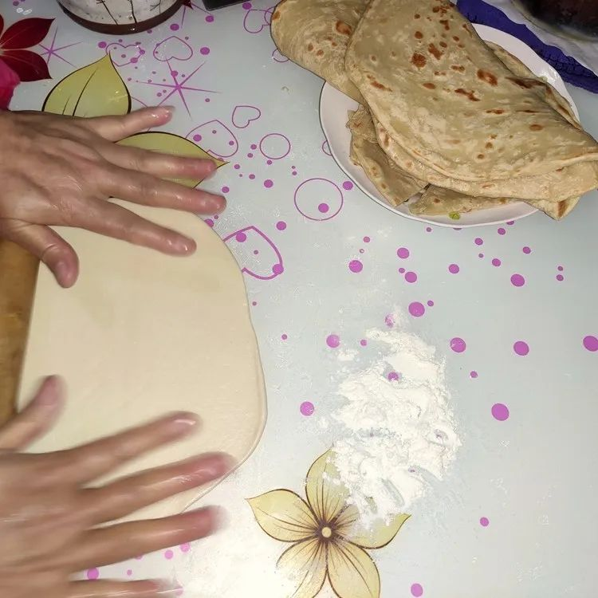
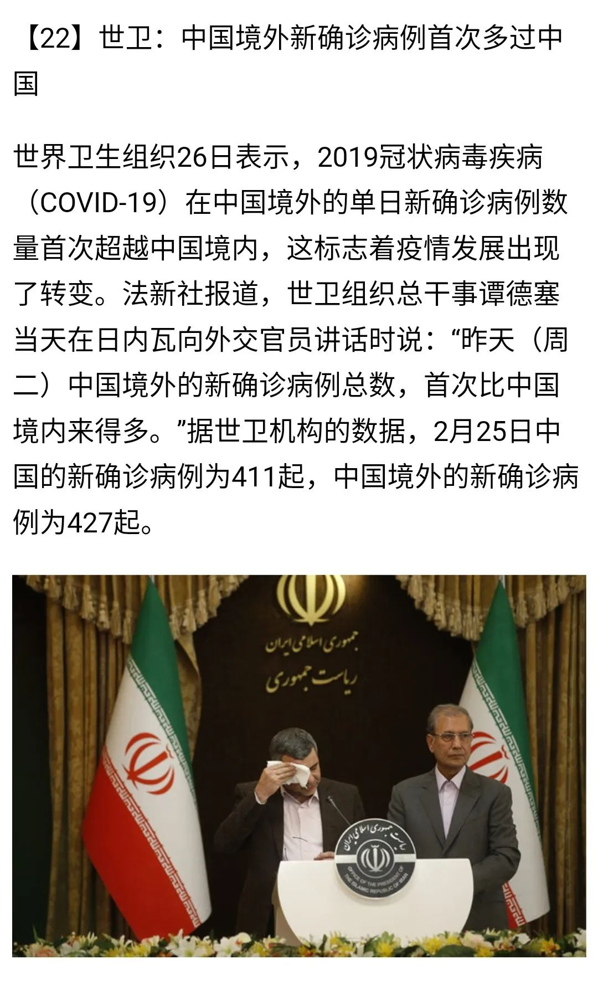
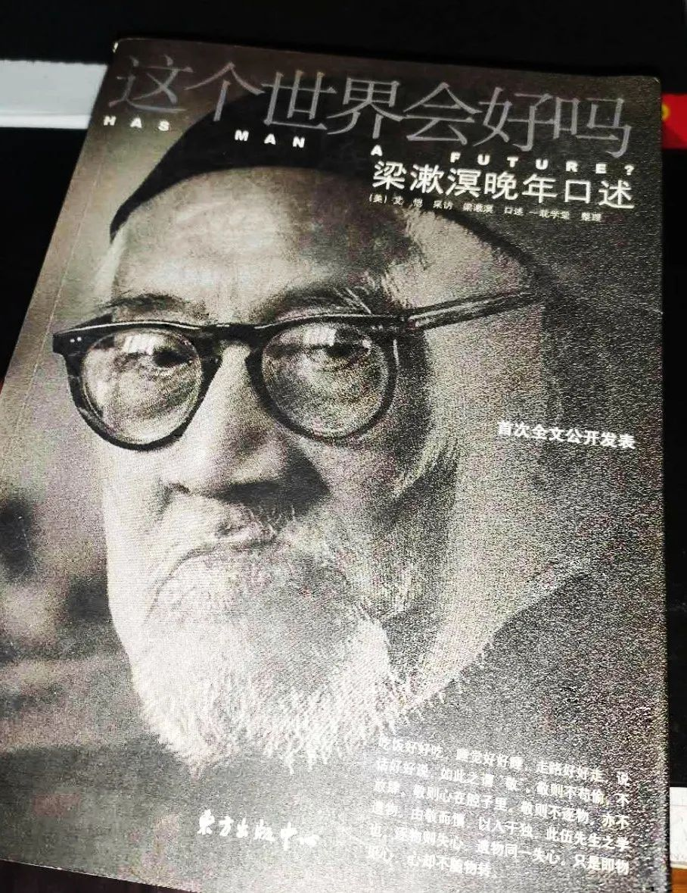

无题
原文链接 备份链接 2020年2月26日。 农历二月初四。 武汉封城第三十五天。 天门封城第三十四天。 淅沥沥的雨竟下了一夜。 猜中一个心照不宣的谜底，失去一场镜花水月的愁绪，破掉一段孤厢情愿的执著——大道理比谁都会讲的我，碰到“心中贼” …
2020年2月27日。
农历二月初五。
武汉封城第三十六天。
天门封城第三十五天。
持续阴雨降温。可能睡久了，半夜又画地图。本月第二次。
有好消息，今日天门0新增0死亡。除湖北外，全国确诊病例持续下降。
钟南山院士通气会说4月底才能控制疫情恢复正常。不知道是全国还是湖北（武汉）。

大方伯今日做的烙饼。

坏消息一大堆：疫情有向全球扩散的危险。配图中，一边发言一边擦汗的伊朗卫生部副部长，已确诊。

因那篇讨论疫情的“wenyi、yuyan和juti的人：与历史学家luoxin的聊天”，播客节目“剩-余-价-值-SurplusValue”全-网-被-封。这是她们最后一条微博。要听更新，得翻（一下）墙了。
自陈（空格）秋（空格）实后，又一位深入武汉疫区的Vlogger，前央视主持人，25岁的李（空格）泽（空格）华，失（空格）联。向他致敬愿他安好！

这图我只看出可悲，没看出有啥好致敬的。

1918年11月7日，粱漱溟的父亲梁济正准备出门，遇到漱溟，二人谈起关于欧战的一则新闻。“世界会好吗？”梁济问道。漱溟回答：“我相信世界是一天天往好里去的。”“能好就好啊！”梁济说罢离开了家。 三天之后，梁济投净业湖自尽。梁漱溟也前后自杀过两次，但最终活到95岁。这个世界会好吗？未必，也许，但愿吧。



原创原创原创创原创原创原创原创原创原创原创原创原创原创原
水妈
长按二维码向我转账
受苹果公司新规定影响，微信 iOS 版的赞赏功能被关闭，可通过二维码转账支持公众号。
文章已于修改
原文链接 备份链接 2020年2月26日。 农历二月初四。 武汉封城第三十五天。 天门封城第三十四天。 淅沥沥的雨竟下了一夜。 猜中一个心照不宣的谜底，失去一场镜花水月的愁绪，破掉一段孤厢情愿的执著——大道理比谁都会讲的我，碰到“心中贼” …
原文链接 备份链接 2020年1月30日。 农历正月初六。 武汉封城第八天。 天门封城第七天。 正常情况，开开心心过完年，今天该返程搬砖了。不知是哪个加班到半夜的社畜许错了愿，亦或是设计2020的程序员出了Bug：是的，我们是需要一个长 …
原文链接 备份链接 2020年1月28日。 农历正月初四。 武汉封城第六天。 天门封城第五天。 回来一周了。不出所料，疫情正处于缓慢爬坡期，病毒也越来越狡猾，潜伏期症状趋于复杂和多样化。不出意外，2月份才是此役关键和转折所在，疫区也还得封 …
原文链接 备份链接 1月23日清早起来时，看到武汉封城的消息。起床后跟正在做饭的母亲说了一声，母亲不是很能理解，也不大关注。这几天一直在她耳边念叨太多疫情的事情，我感觉她都有些消化不过来了。很快黄冈市区也封城了，到了下午我老家武穴也传出了 …
原文链接 备份链接 疫情从发生到现在， 公共卫生专家、流行病学家在话语权上还比较弱 2月22日至23日，中国-世界卫生组织新冠肺炎联合专家考察组在湖北省开展现场调研。考察组访问了同济医院（光谷院区）、武汉体育中心方舱医院，赴省疾控中心调研 …